At NutriZenith, we believe everyone deserves access to nutritious food.
Through our gallery, we want to showcase the journey of food – from seed to plate – and how we're working towards achieving Zero Hunger.
 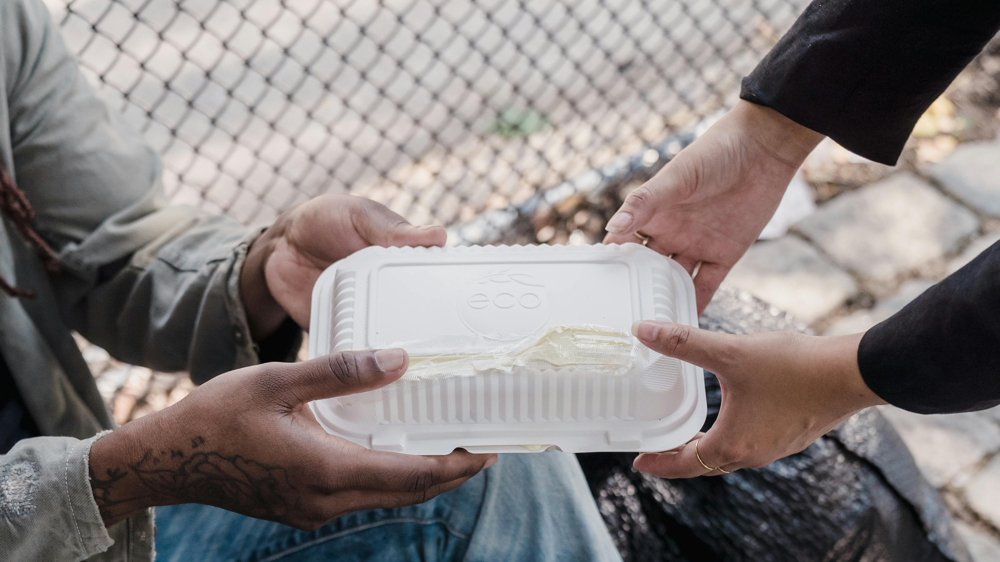
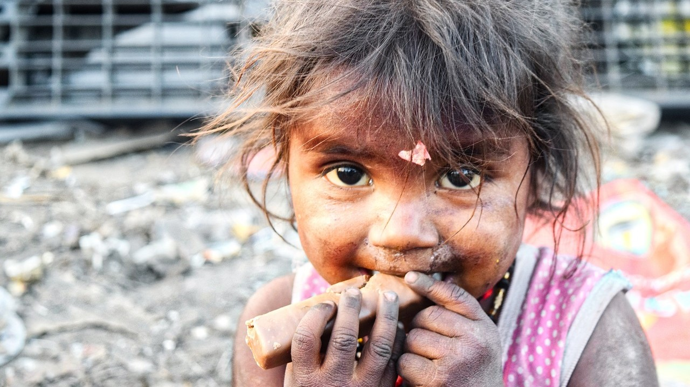
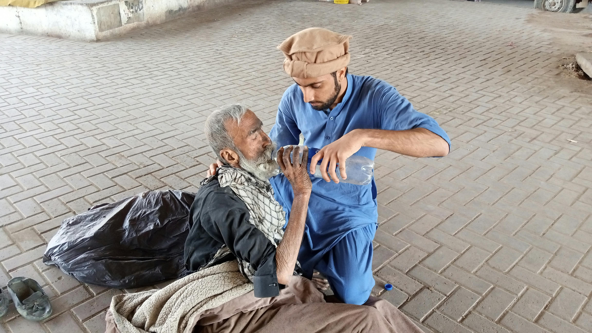
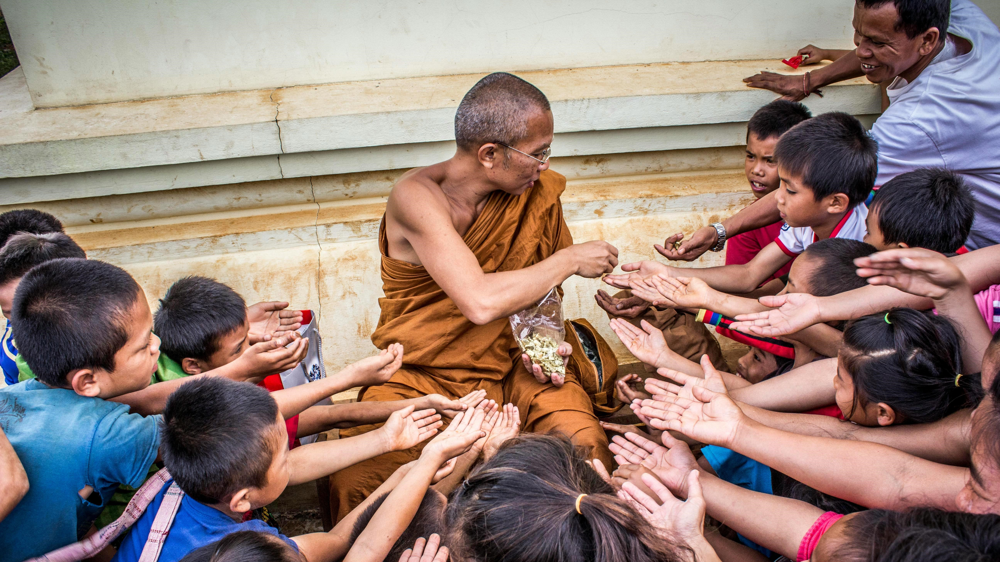
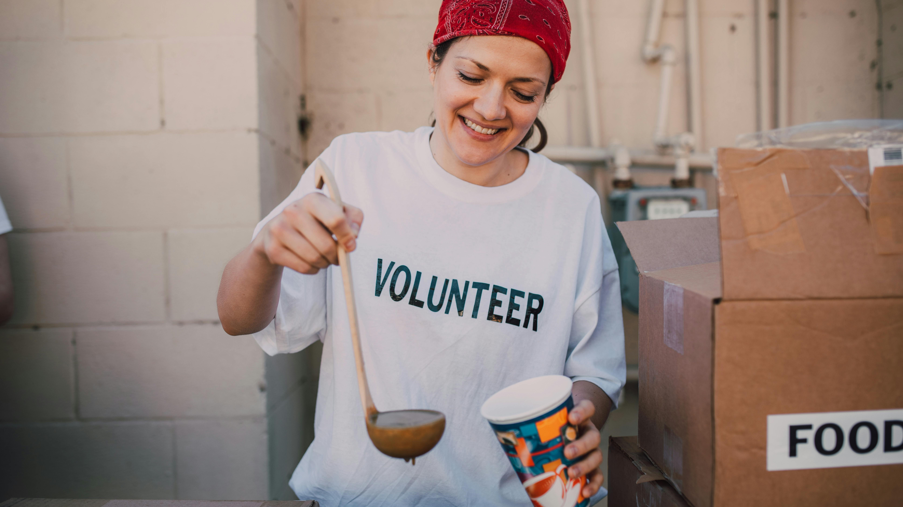
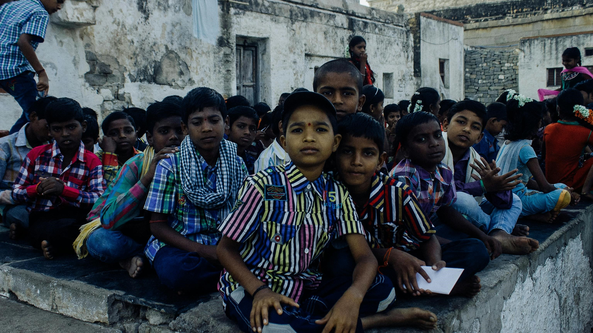
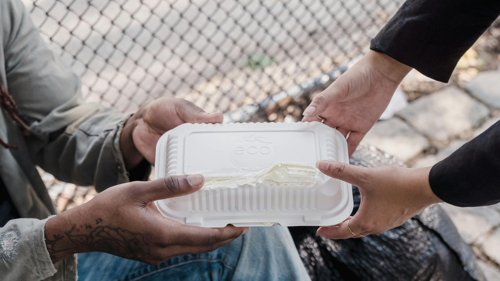
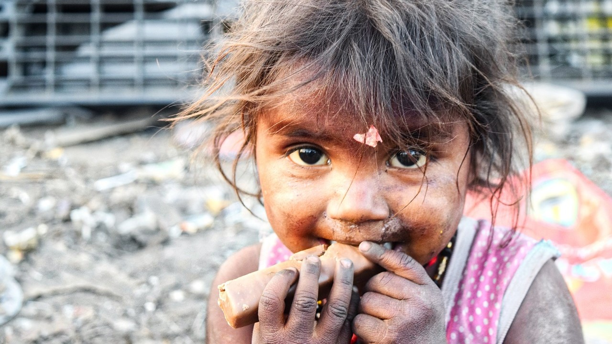
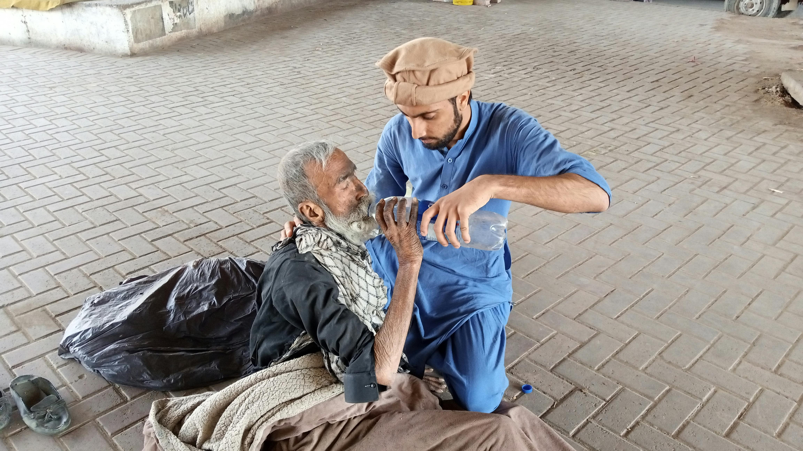
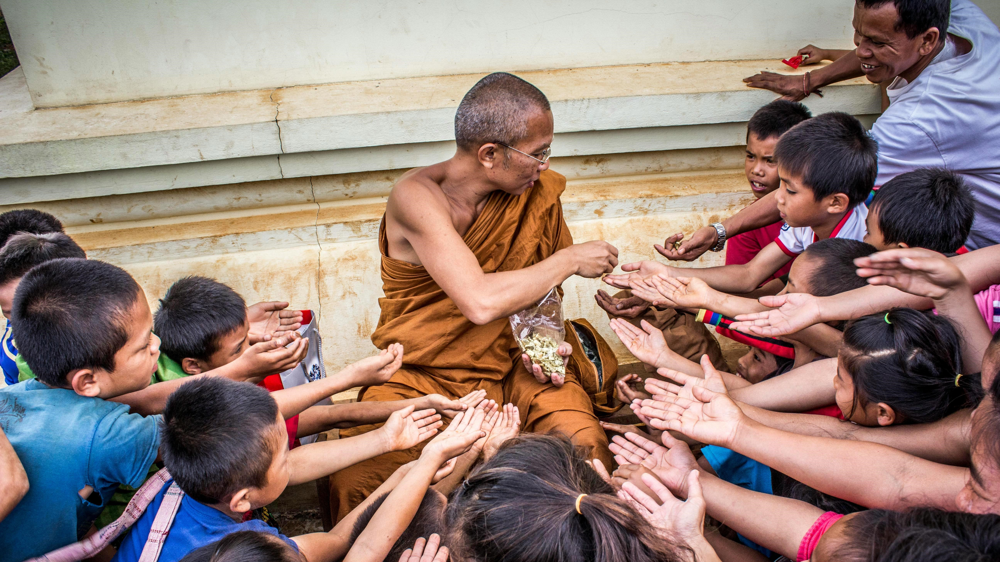
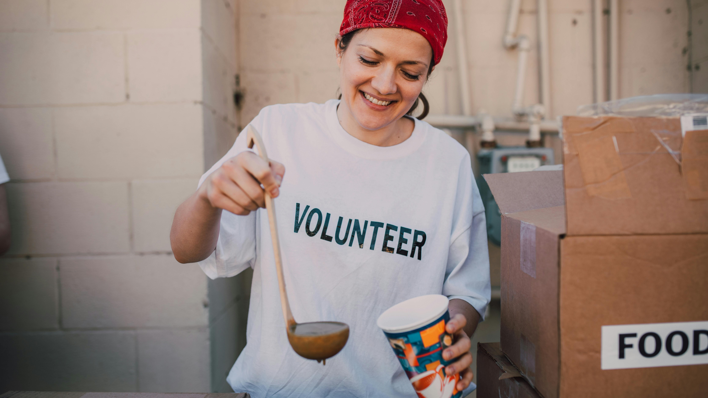
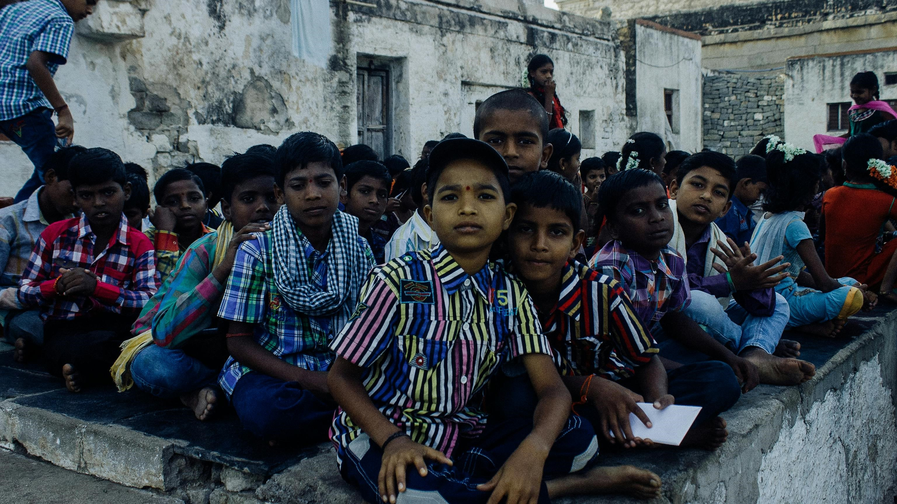